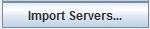
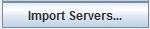

Image 1: ADDE Server Preferences
User Preferences - ADDE Server Preferences
The ADDE Servers tab allows you to add and manage a list of active ADDE servers separated by data type. To turn all servers on/off in the data choosers, click the All on/All of button.
To add a server to the manager, click  or . Both buttons will open the ADDE Data Manager where you can add a remote server or a local server.
or . Both buttons will open the ADDE Data Manager where you can add a remote server or a local server.